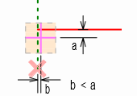
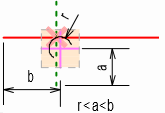
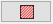
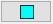
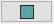
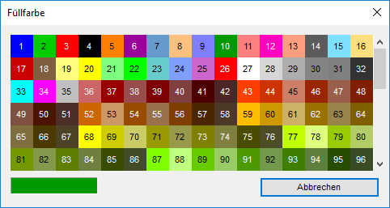
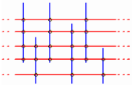
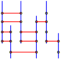
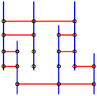
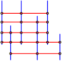

Fangpunkte
Bei den Funktionen [Punkte → manuell], [Linien], [Rechte] und [1Reihe] werden in der Nähe des Cursors liegende Punkte bzw. Linien und Kreise gefangen. Achten Sie beim Anklicken von Zeichenelementen auf die Lage des Cursors – die Lage bestimmt die Zeichenrichtung.
 |
Befinden sich Endpunkte im Cursorbereich, werden Endpunkte oder Mittelpunkte gesucht. Dabei wird der Punkt markiert, der zu der Linie mit dem kleineren Abstand gehört. |
 |
Wenn sich keine Endpunkte im Fangbereich befinden, werden die Schnittpunkte gefunden. Befindet sich der Cursor eindeutig auf einer Linie, werden die Anfangs-, End- und Mittelpunkte erkannt. |
Schraffur (Ursprung)
Wird beim Anlegen einer Flächenschraffur kein Ursprung definiert, wird das Schraffurbild willkürlich in der Fläche verteilt. Durch Angabe eines Ursprungs kann das Schraffurbild gezielt ausgerichtet werden. Der Ursprung definiert dabei die linke untere Ecke des Schraffurbildes.
|
|
Ohne Ursprung wird die Schraffur, hier am Beispiel des Kreuzverbandes, willkürlich in der markierten Fläche verteilt. |
Wird der Ursprung verwendet, haben Sie die Möglichkeit, einen Punkt anzuklicken, bei dem die Schraffur beginnen soll. |


Für Schraffurbereiche, die über Punkte, Fenster, Linien oder Rechtecke definiert werden, kann ein Ursprung für die aktuelle Schraffurfläche festgelegt werden.
Schraffuren und Füllungen
 |
Es werden nur Schraffuren erzeugt. |
 |
Es werden nur Füllungen erzeugt. |
 |
Es werden sowohl Schraffuren als auch Füllungen erzeugt. |
Auswahl der Füllfarbe. Öffnet den Dialog Füllfarbe.  |
Schraffieren und Füllen
 |
Schraffuren bestehen im Grunde aus Linien, die vom Nullpunkt (Ursprung) aus, ohne Ende, im angegebenen Schraffurwinkel gezeichnet werden. ISBCAD ermittelt Schnittpunkte mit den anzugebenden Polygonen. Welcher Teilbereich sichtbar wird, entscheiden Sie durch die Auswahl zwischen den im Folgenden beschriebenen Schaltflächen. Füllungen werden genauso ausgeführt, mit dem Unterschied, dass hier der Winkel immer 0° beträgt. |
|
 |
Normal schraffieren und füllen Es wird immer abwechselnd (zwischen dem ersten und zweiten, dem dritten und vierten, dem fünften und sechsten usw. Schnittpunkt) gezeichnet bzw. bewegt. Wenn zwei Linien übereinanderliegen, werden beide Schnittpunkte berücksichtigt. |
|
 |
Nur äußere Bereiche schraffieren und füllen Es wird nur der Bereich zwischen dem ersten und zweiten und dem vorletzten und letzten Schnittpunkt gezeichnet. |
|
 |
Alles schraffieren und füllen Die Schraffurlinien werden zwischen dem ersten und letzten Schnittpunkt gezeichnet. |
|
Zugehörige Referenzen: